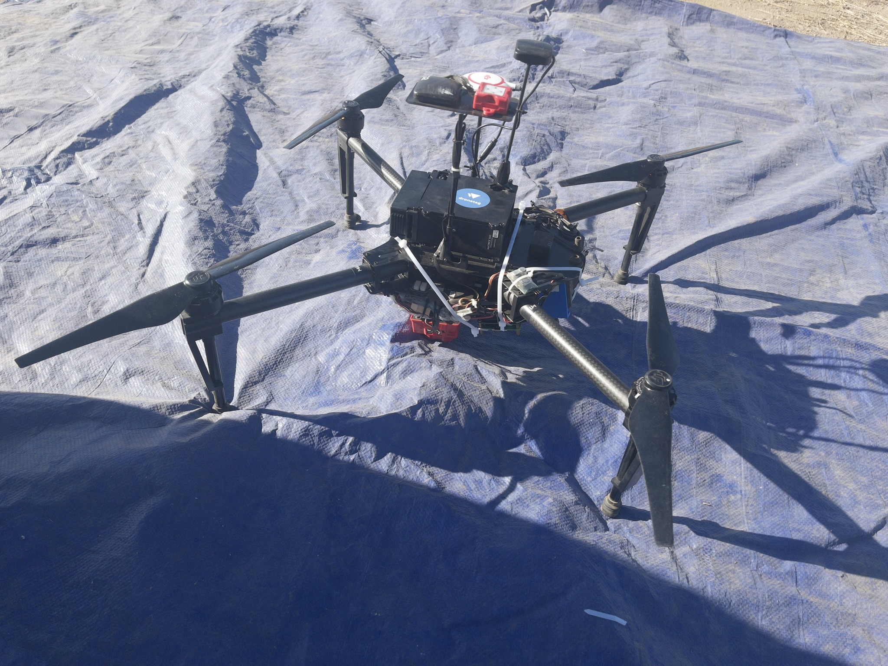

I am an undergraduate researcher attending UCR advised by Zhaowei Tan at GeNeLa. Recently, I've focused on leveraging deep reinforcement learning to make 5G Open RAN networks more energy efficient. Currently, I am fortunate to be a Digital Agriculture Fellow leveraging drones for wireless soil data collection, as well as a research intern at UCR's AASHI DoD Center of Excellence, where I implemented a dynamic session key evolution scheme for LoRaWAN, and I am currently working on near-real-time RAW optimization using deep reinforcement learning.
In my free time, I enjoy going railfanning and eating excessive roujiamo.
Research
SOMNUS: Value Decomposition Networks for
Energy-Efficient O-RU Sleep Control
Gray Greenridge, Zhaowei Tan
Under review, INFOCOM 2027
Dynamic Key Evolution Protocols for LoRaWAN
Security
Soorya Saravanan, Gray Greenridge, Zhaowei Tan,
Yingbo Hua, Ananthram Swami
Under review, INFOCOM 2027
Projects

genela-daf-datalogger
Supported by UCR's Digital Agriculture Fellowship in collaboration with the Verdi Water Management Group, I created a custom solar-powered Raspberry Pi data logger which accumulates soil data and transmits the data if it detects the collection drone flying overhead.
GitHub →